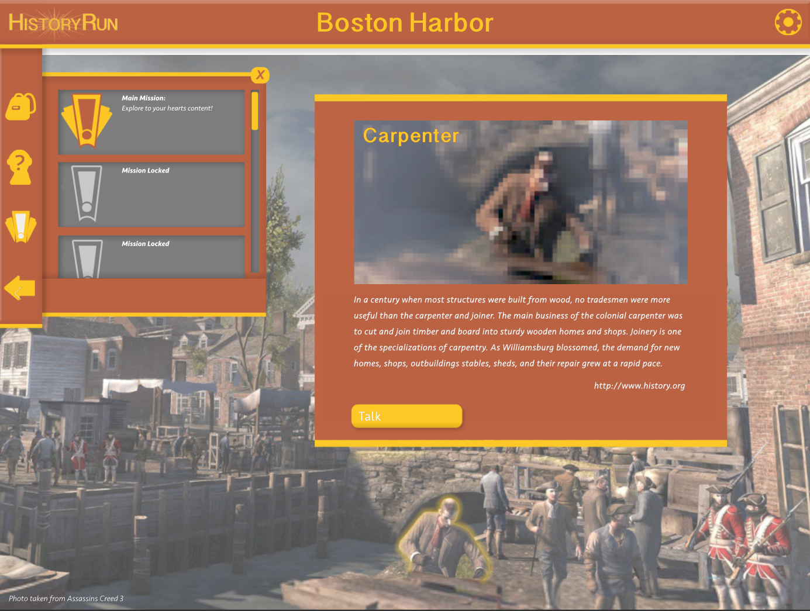
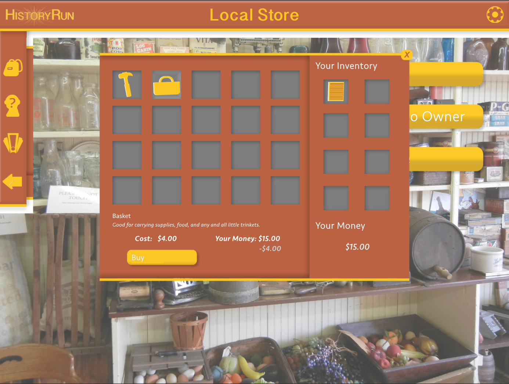
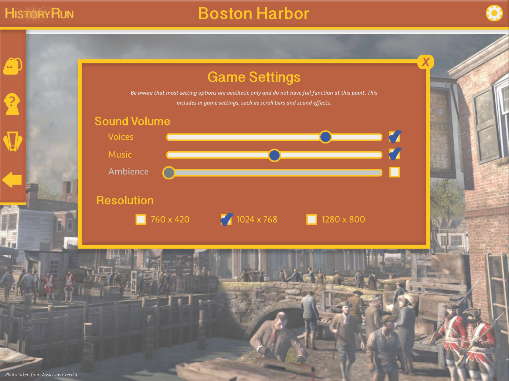

HistoryRun was another project I did where I focused most of my research on the benefits and disadvantages of using tech in the classroom. Again I focused on the aspect of retaining knowledge through experience and interactivity, this time specifically through video games.
Not having programming knowledge, I found a workaround through InDesign and it's interactive buttons and menus ending up with an interactive PDF.
Made using: Illustrator, Photoshop, InDesign
  There's a lot of evidence for both sides of whether or not video games are a valid option for teaching, so there was a lot of wiggle room during this project in terms of expanding my creative licenses. I ended up deciding to go with a point-and-click style game where the user is given a time period (in this case colonial America) and has to explore a city from that time, meeting different occupations, historical figures and ideally getting involved in real-world events.
The idea is that the user will have a better understanding of (and thus retain the information more easily) of historical events. I chose history as the test subject since history and social studies always seemed to be the classes most students get bored in. I wanted to challenge boredom with an alternative method of teaching that would engage the students and even spark interest enough for them to seek out knowledge on their own.
Aesthetically, I was targeting middle-school aged students so I wanted things to look inviting but not patronizing. Avoiding making the user feel like they were being treated like a child was a must, so I strived to make things looks and feel more "adult." It was important to inspire a sense of confidence and exploration so I ended up going with a yellow-gold color as my primary. Yellow specifically is good at both attracting the eye and invoking engergy.
A big key to this being "successful" is that the user will want to come back and be engaged in the game, so I wanted just as much focus on things being inviting. Cartoonish iconography was a must. Logo-wise I wanted to balance the aspects of grown-up and fun, I had a few different directions I was considering, finally ending on a clean and inviting design. No nonsense, but still engaging to look at.